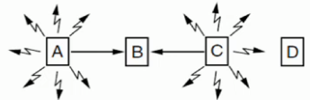
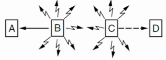
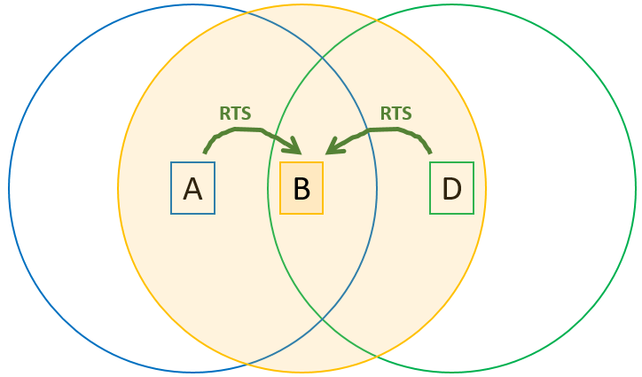
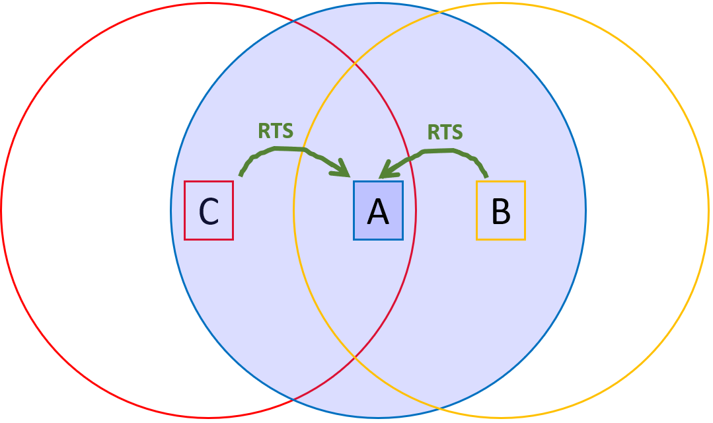
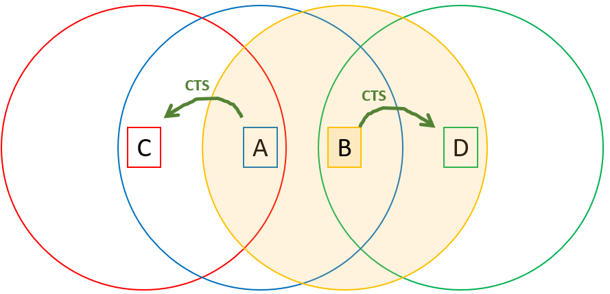

Wireless LAN protocols don't need to deal with ACK's or NAK's.
Carrier sensing is still possible in wireless LAN's, but kinda useless due to something called the Hidden Terminal Problem.
Sender terminal(A) wants to send some data to receiver terminal(C).
In the diagram, A and C are outside each others range. An intermediate terminal(B) is required in order to transmit A's signal to C.
This means A and C are hidden terminals when transmitting to B.
When there are hidden terminals, there is the possibility of collisions occurring, because terminals will transmit data without realising that another terminal also transmitted data towards the same terminal.
Sender terminal(B) wants to send some data to receiver terminal(A).
Also, sender terminal(C) wants to send some data to receiver terminal(D).
In the diagram, B is within C's range.
This is bad news because C will falsely conclude that it cannot send its data to D, because it detected noise coming from B.
This means B and C are exposed terminals when transmitting to A and D respectively.
The Multiple Access Collision Avoidance (MACA) protocol is the solution to the Hidden Terminal Problem - MACA (apparently) doesn't solve the Exposed Terminal Problem.
It's important to remember that the MACA protocol is a collision avoidance protocol:
When a station says to another station 'hey wanna talk?', they must send send a Request To Send (RTS)
If the other station says 'yeah sure lets talk' they must send a Clear To Send (CTS)
Now the two stations are able to freely communicate with each other.
Suppose we have 4 stations (A, B, C, D)
I will do some examples where the terminals try and talk to each other:
| (A -> B) and (B <- D) | (C -> A) and (A <- B) |
|---|---|
|  |  |
|
A sends an RTS to B D sends an RTS to B But A and D are outside of each others range. They are hidden terminals when transmitting to B. Therefore they will both falsely conclude it is safe to send, and will collide at B. |
C sends an RTS to A B sends an RTS to A But C and B are outside each other's range. They are hidden terminals when transmitting to A. Therefore they will both falsely conclude it is safe to send, and will collide at A. |
| (C <- A) and (B -> D) |
|---|
|  |
|
A sends a CTS to C B sends a CTS to D From the perspective of B, A is within range. But B is not sending anything to A. Terminals B and A are exposed terminals when transmitting to C and D respectively. Therefore B will falsely conclude that it is not safe to send to D because it detected noise coming from A. |